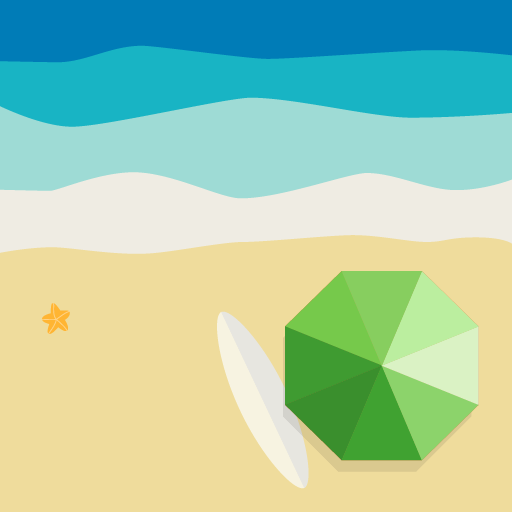

XiaoFan-zh
超级管理员
项目管理
菜单功能
页面建模
个人图库
Cloud Model
云端建模
收件箱
5
管理员
资料
设置
退出
开启全屏
我创建的项目(8)
点击创建项目
创建新项目
打开此项目
52doit/个人网站

打开此项目
start/个人网站
打开此项目
zyupload/上传
打开此项目
zypopup/弹出框
打开此项目
zyimage/图片轮播
打开此项目
zycomment/评论插件
打开此项目
zysearch/文本框
打开此项目
zymulinput/多文本框
填写项目信息
名称 :
描述 :
页面建模信息
项目 :
52doIT
52doIT
52doIT
52doIT
菜单 :